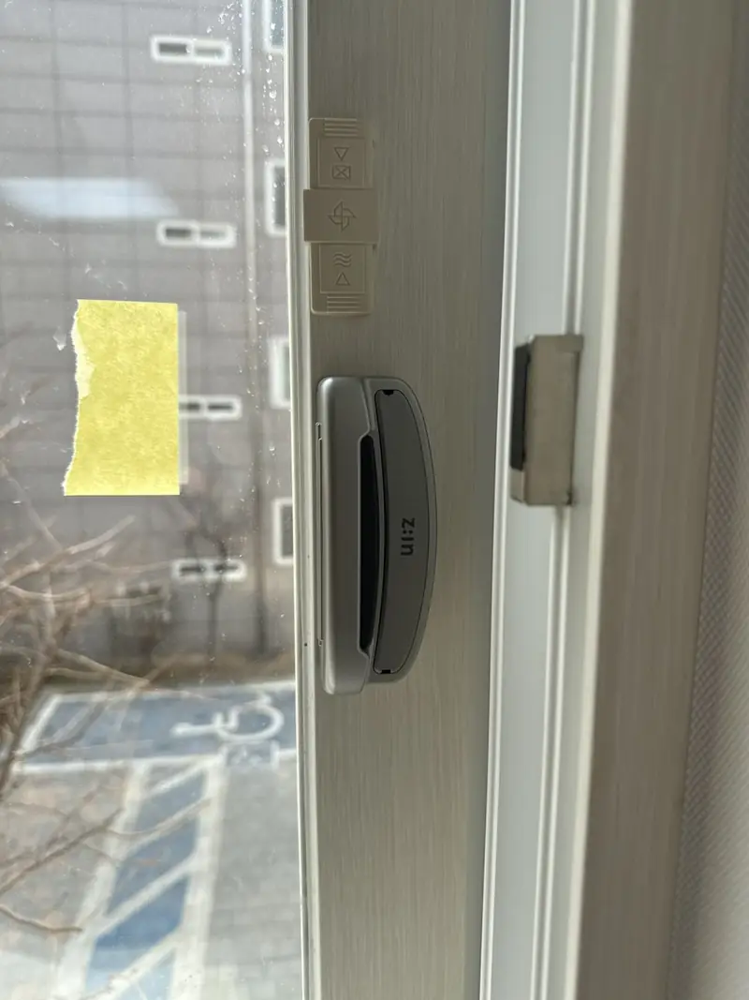
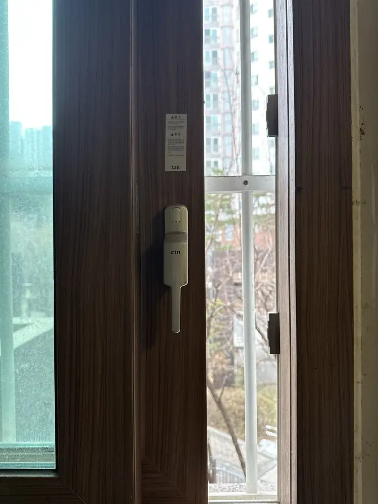
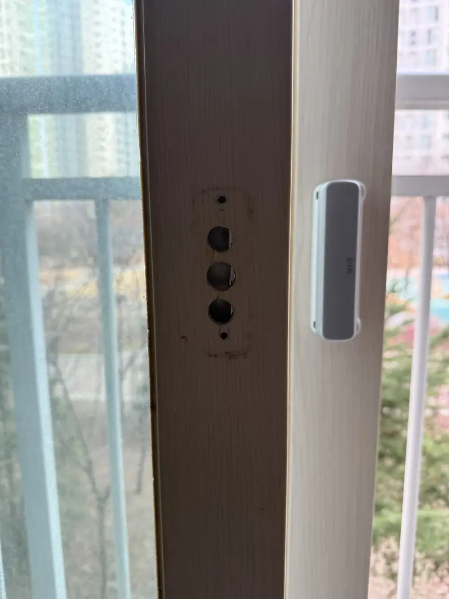
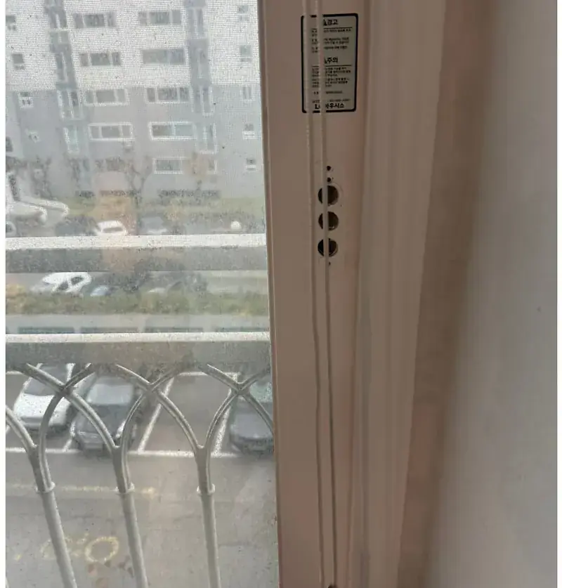
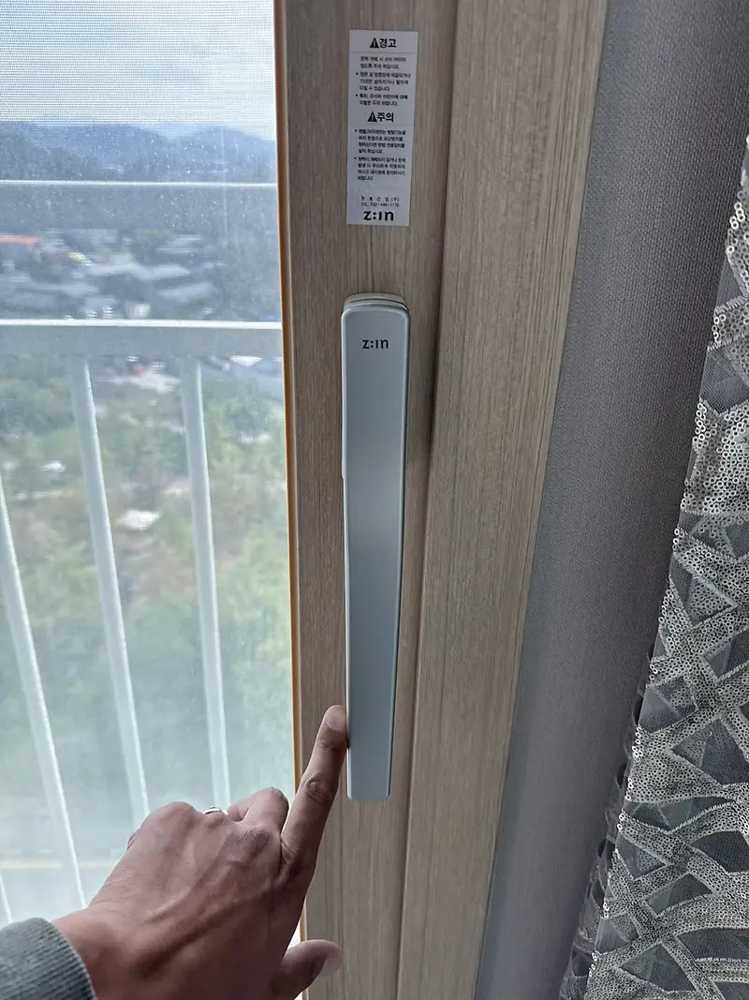
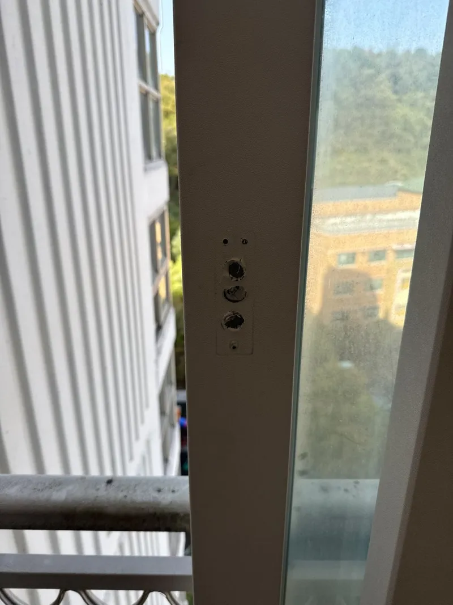

LX샷시 손잡이 · 로드 교체
LX샷시에서 한 손잡이, 로드, 스트라이커 교체 현장 13곳입니다. 증상은 흔들림, 헛돎, 잠금 불량, 잠겨서 안 열림으로 나뉩니다.
010-7360-1917흔들리는 손잡이는 안쪽 고정이 풀린 경우가 많습니다
영통 효성해링턴플레이스는 고정 구멍이 벌어져 있었고, 도봉 숲아리뜨움은 나사 체결 부위가 마모돼 다시 조여도 풀리는 상태였습니다.
헛돌거나 부러진 손잡이는 내부 축을 봅니다
안산파크푸르지오는 금속 축이 끊어져 있었고, 세종조치원푸르지오는 사각 축 끝부분이 마모돼 있었습니다. 같은 LX 규격으로 맞춰야 축 길이와 간격이 맞습니다.
잠금이 안 걸리면 로드를 의심합니다
세종 금강센트리움과 부천 제이트카운티는 로드 교체였고, 중구 신안 동진아파트는 로드가 걸려 고착돼 강제개방 후 교체했습니다.
손잡이는 움직이는데 창이 안 열리면
LX Z:IN 시스템창호에서 손잡이 로드와 스트라이커를 교체해 여닫힘을 복구한 사례도 있습니다.
CASES
LX샷시 손잡이 교체 시공사례

세종 LX금강센트리움 샷시 손잡이 교체, 부품을 미리 준비해 방문 즉시 교체

LX금강센트리움 샷시 로드 교체, 잠금 불량이 로드 파손이던 현장

영통 효성해링턴플레이스 LX샷시 손잡이 교체, 흔들림 원인부터 잡았습니다

도봉 숲아리뜨움 LX샷시 손잡이 교체, 흔들림을 부분 수리 대신 교체로 해결

서울역래미안5차 LX샷시 손잡이 교체, 닫힘과 잠금 위치부터 확인했습니다

안산파크푸르지오 샷시 손잡이 교체, 부러진 LX 창문손잡이를 같은 규격 호환품으로

미사강변 29단지 LX 창호 레버 교체, 돌아가는데 잠금이 안 걸리던 현장

동탄 반도유보라 LX 지인(Z:IN) 손잡이 교체, 헐거운 고정을 바로잡았습니다

중구 신안 동진아파트 LX샷시 강제개방 후 로드 교체, 잠겨서 열리지 않던 창문

부천 제이트카운티 LX 샷시 로드 교체, 걸리고 끝까지 안 잠기던 창

잠긴 창문이 안 열릴 때, LX Z:IN 손잡이 로드와 스트라이커 교체

세종조치원푸르지오 LX샷시 손잡이 교체, 헛돌던 내부 축을 확인하고 교체

용인 강남마을자연앤 LX샷시 손잡이 교체, 잠금 부속까지 한 세트로 전체 교체
FAQ
LX샷시 손잡이 교체, 자주 묻는 질문
축 길이와 간격이 맞아야 해서 같은 LX 규격으로 맞춥니다. 안산파크푸르지오에서는 같은 규격의 호환품을 썼습니다.
손잡이를 돌려도 잠금이 안 걸리면 로드를 확인합니다. 손잡이는 멀쩡하고 안쪽 로드가 마모된 현장이 있었습니다.
다른 작업 · 부품 · 시공사례
LX샷시 손잡이 교체, 사진 한 장이면 됩니다
손잡이 사진을 보내주시면 브랜드와 규격을 먼저 확인해
맞는 부품을 준비해서 방문합니다. 365일 24시간 상담 가능합니다.